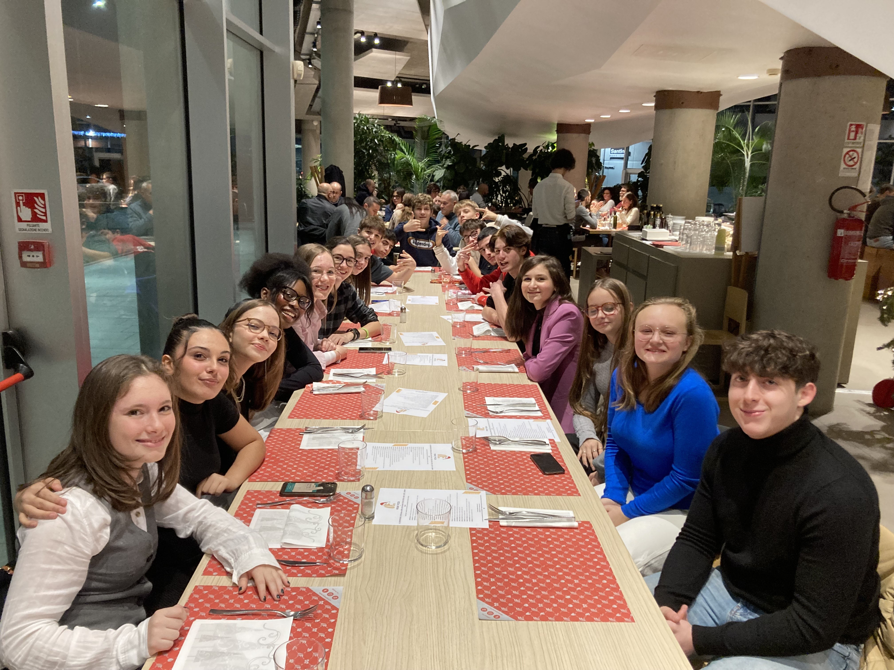

Who
What
Where
Quotes
Photos
My Pov
WHO??
-->> 2QLSA
Noi siamo la 2QLSA, del liceo scientifico, scienze applicate, quadriennale biomendico, dell'istituto Giulio Natta di Bergamo.
18 ragazzi accomunati dalla pazzia di aver scelto questa scuola, chi per curiosità, chi per passione.
Abbiamo fatto ogni possibile progetto e lavoro di gruppo, abbiamo provato ogni tipo di esperienza, ogni tipo di attività, in ogni situazione possibile: ci siamo trovati a pagaiare sotto il diluvio, correre sotto la pioggia, camminare nella palude e giocare a beach volley con l'arrivo del primo sole.
Abbiamo ballato anche se imbarazzati, cantato e suonato 18 in un'unica stanza, parlato e giocato, camminato con passo felpato per non farci sentire. Abbiamo riso e ci siamo divertiti, ma siamo anche stati tristi, arrabbiati, ansiosi, ci siamo scoraggiati; eppure non abbiamo mai lasciato indietro nessuno, non ci siamo mai tirati indietro.
Abbiamo sempre fatto tutto insieme, ovunque, in qualunque ambito. Forse è questo il nostro punto di forza, ci siamo trovati, abbaimo legato e ora facciamo tutto insieme, nel bene e nel male. :)

E lo ridico ancora
per impararlo a memoria
in questi giorni impazziti
di polvere di gloria
e lo ripeto ancora
fino a strapparmi le corde vocali
ora che siamo qui
Noi siamo gli immortali